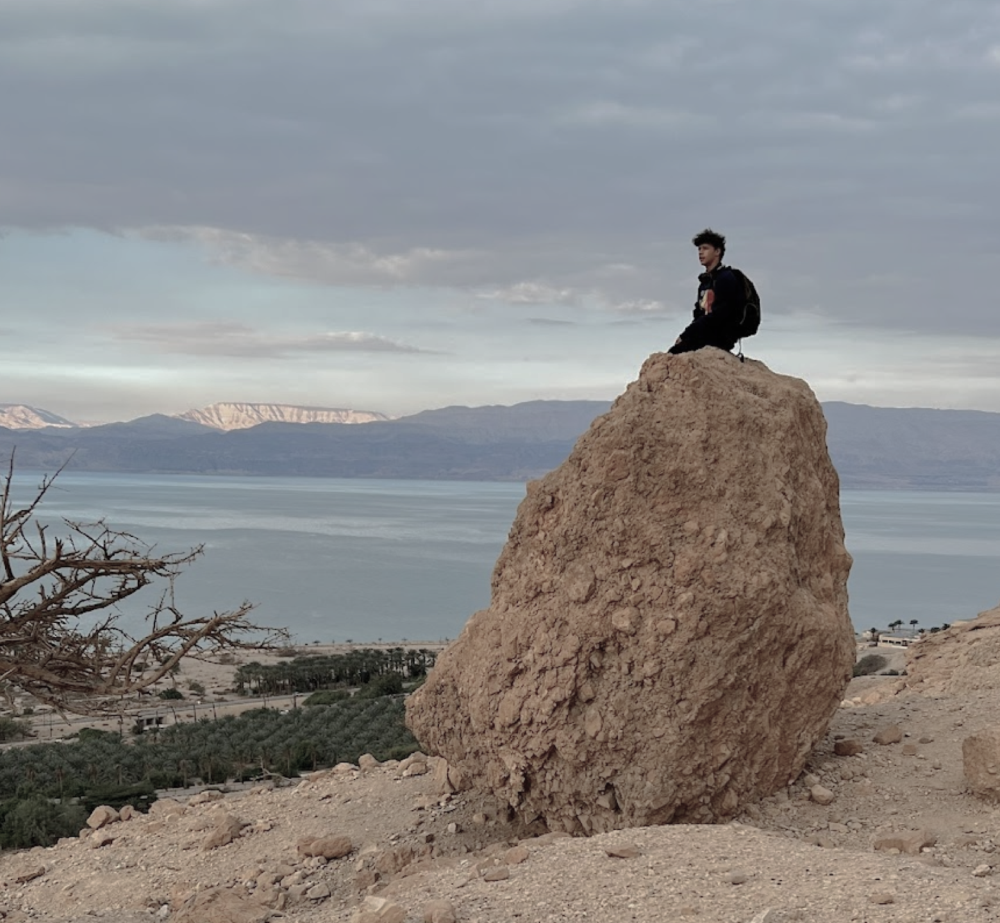

Ich heisse,
Julian
Von Breakdance bis Backend -
ich bewege mich nicht nur auf der Bühne,
sondern auch im Code mit Leidenschaft.

Von Breakdance bis Backend -
ich bewege mich nicht nur auf der Bühne,
sondern auch im Code mit Leidenschaft.
Ich bin 16 Jahre alt und ich bin im ersten Lehrjahr als Informatiker EFZ mit Fachrichtung Applikationsentwicklung. Meine Ausbildung absolviere ich bei der PAUS AG in Tübach, wo ich bereits früh in Softwareprojekte eingebunden werde und viel über professionelle Programmierung und strukturiertes Arbeiten lerne. Ich habe mehrere Hobbys: Ich spiele Schlagzeug, tanze Breakdance und programmiere kleine Tools und Spiele. Besonders interessiere ich mich für Game- Design, Webentwicklung und alles, was sich mit Code gestalten lässt. Neben Schule und Beruf engagiere ich mich als Jungscharleiter bei der Stami St.Gallen. Dort plane und leite ich Programme für Kinder und Jugendliche, was mir viel Freude bereitet und meine soziale Verantwortung sowie Teamfähigkeit fördert. Ich arbeite gerne konzentriert, bleibe auch bei schwierigen Aufgaben geduldig und gebe nicht so schnell auf. Mein Ziel ist es, mein Wissen laufend zu erweitern und in Zukunft spannende Projekte umzusetzen.
Die PAUS AG mit Sitz in Tübach (SG) entwickelt seit über 35 Jahren spezialisierte Softwarelösungen für die Bereiche Küchenplanung, Raumgestaltung und Unternehmensorganisation. Als Informatik-Lernender kann ich hier früh an praxisnahen Projekten mitarbeiten und mein Wissen in einem professionellen Umfeld weiterentwickeln. Die beiden Hauptprodukte der PAUS AG sind: Eva® - Eine leistungsstarke Küchen- und Wohnraumplanungssoftware für Küchenbauer, Innenarchitekten und Planungsbüros. Max® - Ein modulares ERP-System mit integrierter Zeiterfassung und CRM- Funktionalität für kleine und mittlere Unternehmen. Ich schätze besonders die enge Betreuung, die vielseitigen Aufgaben und die hohe Qualität, mit der bei PAUS entwickelt wird.
Weitere Informationen unter: www.paus.ch